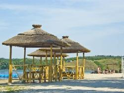
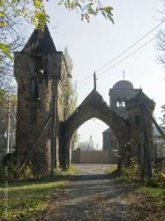
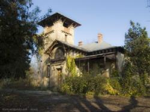
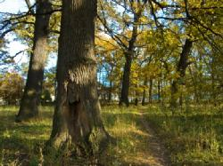
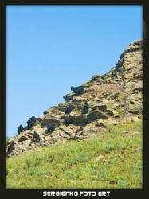
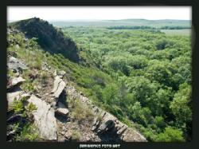
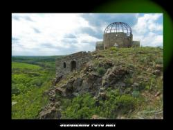
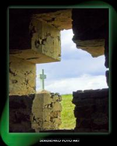

Уехать подальше из шумного города, пропахшего бензином и горячим асфальтом предлагает "В городе". Исаковское водохранилище, усадьба Мсциховского и Храм Всех Святых не оставят равнодушным ни одного луганчанина.
Несмотря на то, что рабочая неделя только началась, никто не мешает нам задуматься о том, что делать в выходные. И если решить это прямо сегодня - мысль о предстоящем отдыхе поможет скрасить долгие трудовые будни.
В этом материале мы подготовили рассказ о пяти интересных местах Луганщины, где можно с удовольствием провести выходные – спрятаться от городской суеты, насладиться природой и отдохнуть душой.
Так уж вышло, что луганская земля обделила нас прелестями морского отдыха, но все же возможность дешево и сердито отдохнуть в местах "идентичных натуральному" морю есть. Одно из них – Исаковское водохранилище.

Чем не черноморское побережье? Фото: Дмитрий Сергиенко.
Если человеку несведущему показать постановочные фотографии лазурных вод Исаковского водохранилища с плавающими парусниками или гидроциклами, то это место наверняка примут за какое-нибудь Акапулько, Сен-Тропе или на худой конец черноморское побережье. В некоторых местах можно встретить все прелести курортного отдыха – песчаный берег, водные аттракционы, бары, дискотеки, волейбольные, футбольные и детские площадки, зоны шезлонгов и прочее.
Расстояние: 43 км от Луганска
GPS: N48° 26' 32.6832", E38° 55' 3.6984"
В Перевальском районе в тихом красивом селении Селезневка есть место, которое является немым свидетелем имперского величия, советского равнодушия и украинской заброшенности. Но и под тяжестью времени памятник архитектуры XIX века "Усадьба Мсциховского" не утратил своего благородного достоинства.

Усадьба Мсциховского - памятник архитектуры XIX века. Фото: Дмитрий Сергиенко.
До сих пор в двухэтажном здании сохранились многие уникальные детали, уцелели три из четырех каминов, лепные украшения. Но самое главное в усадьбе Мсциховского – атмосфера тайны. Кажется, что вот-вот и удастся приподнять завесу, за которой старый дом хранит свои многочисленные истории.

Что за тайны хранит этот дом? Не побываете - не узнаете. Фото: Дмитрий Сергиенко.
Расстояние: 49,7 км от Луганска
GPS: N 48° 23' 56.1948", E 38° 47' 15.9648"
Кременской район - самый зеленый в Луганской области. За его густые леса, множество красивейших озер и болот это место не зря называют "Легкими Донбасса".

Дубы-патриархи растут здесь больше 200 лет. Фото: Дмитрий Сергиенко.
А гордостью лесного края по праву является заповедное урочище "Дубовая роща". Кто побывал здесь однажды, обязательно захочет вернуться. Его главная особенность заключается в природном происхождении. 5,5 гектаров уникального леса с дубами-колдунами возрастом свыше 250 лет создала исключительно мать-природа. Здесь насчитывается около тысячи таких деревьев-патриархов, стволы которых могут обхватить 5-6 человек. Помимо могучих дубов здесь также распространены остролистный клен, липа, различные виды жимолости, бирючины и других цветущих кустарников.
Расстояние: 127 км. от Луганска
Пешие походы – от 60 грн.
Поход на байдарках – 200-650 грн.
Поход на велосипедах – 60-135 грн.
Корпоративный отдых – от 20 грн.
GPS: N 49° 4' 31.30", E 38° 10' 57.34"
Луганский природный заповедник (Королевские скалы, Провальская степь). Повезло нам или нет, но как таковых гор на Донбассе нет (терриконы не в счет). Но это не значит, что на наших просторах нельзя найти те горные красоты, которые таятся под едва видимыми хребтами донбасских степей. Доказательство этому – живописный подарок природы "Королевские скалы".

Королевские скалы - подарок природы жителям Луганщины. Фото: Дмитрий Сергиенко.
На склонах этой гряды, простирающейся с запада на восток на 1,5 км и возвышающейся над окружающей местностью на 50-60 м, забываешь о степной сущности Луганщины. Абсолютные высоты Донецкого кряжа здесь достигают внушительных 210-325 м, а угол наклона в некоторых местах — 30-60 градусов.

Нужно быть очень осторожным на этих скалах - они легко крошатся под ногами. Фото: Дмитрий Сергиенко.
Многие думают, что Донбасс – это индустриальный человеческий "улей", край вечно дымящихся труб. Но стоит отъехать на какие-нибудь 20 километров от Луганска, и в кряжистых холмах Донецкого кряжа ощущается первобытная глушь. В одном из таких "медвежьих углов" расположился широко известный в узких кругах Храм Всех Cвятых.

Храм Всех Вер - однажды там побывав, обязательно вернешься еще раз. Фото: Дмитрий Сергиенко.
На вершине горы тут католическая часовенка соседствует с буддистской ступой, рядом строится православный храм, неподалеку — место для жертвенного огня, его построили последователи учения Бабаджи. Служители почти забытых славянских богов тоже выложили здесь камнями свои культовые сооружения.

В этом Храме есть место для всех религий. Фото: Дмитрий Сергиенко.
Обитатель этого необычного места Николай Тарасенко убежден, что все люди, какие бы молитвы они ни произносили, обращаются к одному и единому Богу. Именно поэтому журналисты прозвали Николая "монахом всех религий".
Расстояние: 42,4 км от Луганска
GPS: N 48° 13' 51.4632", E 39° 22' 49.7748"
{kind=link}
{kind=link}
{kind=link}
{kind=link}
{kind=link}
{kind=link}
{kind=link}
{kind=link}